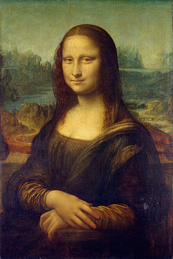

Mona Lisa
| Italian: La Gioconda, French: La Joconde | |
|  | |
| Artist | Leonardo da Vinci |
|---|---|
| Year | c. 1503–06, perhaps continuing until c. 1517 |
| Type | Oil on poplar |
| Subject | Possibly Lisa Gherardini |
| Dimensions | 77 cm × 53 cm (30 in × 21 in) |
| Location | Musée du Louvre, Paris |
The Mona Lisa (/ˌmoʊnə ˈliːzə/; Italian: Monna Lisa [ˈmɔnna ˈliːza] or La Gioconda [la dʒoˈkonda], French: La Joconde [la ʒɔkɔ̃d]) is a half-length portrait of a woman by the Italian artist Leonardo da Vinci, which has been acclaimed as "the best known, the most visited, the most written about, the most sung about, the most parodied work of art in the world".[1]
The painting, thought to be a portrait of Lisa Gherardini, the wife of Francesco del Giocondo, is in oil on a white Lombardy poplar panel, and is believed to have been painted between 1503 and 1506. Leonardo may have continued working on it as late as 1517. It was acquired by King Francis I of France and is now the property of the French Republic, on permanent display at the Louvre Museum in Paris since 1797.[2]
The subject's expression, which is frequently described as enigmatic,[3] the monumentality of the composition, the subtle modeling of forms, and the atmospheric illusionism were novel qualities that have contributed to the continuing fascination and study of the work.[4]
Contents
[hide]Title and subject
The title of the painting, which is known in English as Mona Lisa, comes from a description by Renaissance art historian Giorgio Vasari, who wrote "Leonardo undertook to paint, for Francesco del Giocondo, the portrait of Mona Lisa, his wife."[5][6] Mona in Italian is a polite form of address originating as ma donna – similar to Ma’am, Madam, or my lady in English. This became madonna, and its contraction mona. The title of the painting, though traditionally spelled "Mona" (as used by Vasari[5]), is also commonly spelled in modern Italian as Monna Lisa ("mona" being a vulgarity in some Italian dialects) but this is rare in English.[citation needed]
Vasari's account of the Mona Lisa comes from his biography of Leonardo published in 1550, 31 years after the artist's death. It has long been the best-known source of information on the provenance of the work and identity of the sitter. Leonardo's assistant Salaì, at his death in 1525, owned a portrait which in his personal papers was named la Gioconda, a painting bequeathed to him by Leonardo.
That Leonardo painted such a work, and its date, were confirmed in 2005 when a scholar at Heidelberg University discovered a marginal note in a 1477 printing of a volume written by the ancient Roman philosopher Cicero. Dated October 1503, the note was written by Leonardo's contemporary Agostino Vespucci. This note likens Leonardo to renowned Greek painter Apelles, who is mentioned in the text, and states that Leonardo was at that time working on a painting of Lisa del Giocondo.[7]
The model, Lisa del Giocondo,[8][9] was a member of the Gherardini family of Florence and Tuscany, and the wife of wealthy Florentine silk merchant Francesco del Giocondo.[10] The painting is thought to have been commissioned for their new home, and to celebrate the birth of their second son, Andrea.[11] The Italian name for the painting, La Gioconda, means "jocund" ("happy" or "jovial") or, literally, "the jocund one", a pun on the feminine form of Lisa's married name, "Giocondo".[10][12] In French, the title La Joconde has the same meaning.
Before that discovery, scholars had developed several alternative views as to the subject of the painting. Some argued that Lisa del Giocondo was the subject of a different portrait, identifying at least four other paintings as the Mona Lisa referred to by Vasari.[13][14] Several other women have been proposed as the subject of the painting.[15] Isabella of Aragon,[16] Cecilia Gallerani,[17] Costanza d'Avalos, Duchess of Francavilla,[15] Isabella d'Este, Pacifica Brandano or Brandino, Isabela Gualanda, Caterina Sforza—even Salaì and Leonardo himself—are all among the list of posited models portrayed in the painting.[18][19] The consensus of art historians in the 21st century maintains the long-held traditional opinion, that the painting depicts Lisa del Giocondo.[7]
History
Leonardo da Vinci began painting the Mona Lisa in 1503 or 1504 in Florence, Italy.[20] Although the Louvre states that it was "doubtless painted between 1503 and 1506",[4] the art historian Martin Kemp says there is some difficulty in confirming the actual dates with certainty.[10] According to Leonardo's contemporary, Giorgio Vasari, "after he had lingered over it four years, [he] left it unfinished".[6] Leonardo, later in his life, is said to have regretted "never having completed a single work".[21]
In 1516, Leonardo was invited by King François I to work at the Clos Lucé near the king's castle in Amboise. It is believed that he took the Mona Lisa with him and continued to work after he moved to France.[18] Art historian Carmen C. Bambach has concluded that da Vinci probably continued refining the work until 1516 or 1517.[22]
Upon his death, the painting was inherited with other works by his pupil and assistant Salaì.[10] Francis I bought the painting for 4,000 écus and kept it at Palace of Fontainebleau, where it remained until Louis XIV moved the painting to the Palace of Versailles. After the French Revolution, it was moved to the Louvre, but spent a brief period in the bedroom of Napoleon in the Tuileries Palace.
During the Franco-Prussian War (1870–71) it was moved from the Louvre to the Brest Arsenal.[23] During World War II, the painting was again removed from the Louvre and taken safely, first to Château d'Amboise, then to the Loc-Dieu Abbey and Château de Chambord, then finally to the Ingres Museum in Montauban.
In December 2015, it was reported that French scientist Pascal Cotte had found a hidden portrait underneath the surface of the painting using reflective light technology.[24] The portrait is an underlying image of a model looking off to the side.[25] Having been given access to the painting by Louvre in 2004, Cotte spent ten years using layer amplification methods to study the painting.[24] According to Cotte, the underlying image is Leonardo's original Mona Lisa.[24][26]
Theft and vandalism

On 21 August 1911, the painting was stolen from the Louvre.[27] The next day, painter Louis Béroud walked into the museum and went to the Salon Carré where the Mona Lisa had been on display for five years, only to find four iron pegs on the wall. Béroud contacted the head of the guards, who thought the painting was being photographed for promotional purposes. A few hours later, Béroud checked back with the Section Chief of the Louvre who confirmed that the Mona Lisa was not with the photographers. The Louvre was closed for an entire week during the investigation.
French poet Guillaume Apollinaire, who had once called for the Louvre to be "burnt down", came under suspicion and was arrested and imprisoned. Apollinaire implicated his friend Pablo Picasso, who was brought in for questioning. Both were later exonerated.[28][29] Two years later the thief was found. Louvre employee Vincenzo Peruggia had stolen the Mona Lisa by entering the building during regular hours, hiding in a broom closet, and walking out with it hidden under his coat after the museum had closed.[12] Peruggia was an Italian patriot who believed da Vinci's painting should have been returned for display in an Italian museum. Peruggia may have also been motivated by a friend whose copies of the original would significantly rise in value after the painting's theft. A later account suggested Eduardo de Valfierno had been the mastermind of the theft and had commissioned forger Yves Chaudron to create six copies of the painting to sell in the U.S. while the location of the original was unclear.[30] However, the original painting remained in Europe. After having kept the Mona Lisa in his apartment for two years, Peruggia grew impatient and was caught when he attempted to sell it to directors of the Uffizi Gallery in Florence. It was exhibited in the Uffizi Gallery for over two weeks and returned to the Louvre on 4 January 1914.[31] Peruggia served six months in prison for the crime and was hailed for his patriotism in Italy.[29] Before its theft, the Mona Lisa was not widely known outside the art world. It was not until the 1860s that some critics, a thin slice of the French intelligentsia, began to hail it as a masterwork of Renaissance painting.[32]
In 1956, part of the painting was damaged when a vandal threw acid at it.[33] On 30 December of that year, a speck of pigment near the left elbow was damaged when a rock was thrown at the painting, which was later restored.[34]
The use of bulletproof glass has shielded the Mona Lisa from subsequent attacks. In April 1974, a woman, upset by the museum's policy for disabled people, sprayed red paint at it while it was being displayed at the Tokyo National Museum.[35] On 2 August 2009, a Russian woman, distraught over being denied French citizenship, threw a ceramic teacup purchased at the Louvre; the vessel shattered against the glass enclosure.[36][37] In both cases, the painting was undamaged.
Aesthetics
_-_Louvre_779_-_Detail_(right_landscape).jpg)
{kind=link}
{kind=link}
{kind=link}
{kind=link}
{kind=link}
The Mona Lisa bears a strong resemblance to many Renaissance depictions of the Virgin Mary, who was at that time seen as an ideal for womanhood.[38]
The technique of turning the figure "two-thirds towards the viewer" is similar to late 15th-century works by Lorenzo di Credi and Agnolo di Domenico del Mazziere.[38] Zöllner notes that the sitter's general position can be traced back to Flemish models and that "in particular the vertical slices of columns at both sides of the panel had precedents in Flemish portraiture."[39] Woods-Marsden cites Hans Memling's portrait of Benededetto Portinari (1487) or Italian imitations such as Sebastiano Mainardi's pendant portraits for the use of a loggia, which has the effect of mediating between the sitter and the distant landscape, a feature missing from Leonardo's earlier portrait of Ginevra de' Benci.[40]
{kind=link}
{kind=link}
The woman sits markedly upright with her arms folded, a sign of her reserved posture. Only her gaze is fixed on the observer and seems to welcome them to this silent look of communication.[original research?] Since the brightly lit face is practically framed by much darker elements (hair, veil, shadows), the observer's attraction to her is brought out to an even greater extent.[original research?] The woman appears alive to an unusual extent, which Leonardo achieved by his new method of not drawing outlines (sfumato). The soft blending creates an ambiguous mood "mainly in two features: the corners of the mouth, and the corners of the eyes".[41]
_-_Louvre_779_-_Detail_(hands).jpg)
The painting was one of the first portraits to depict the sitter in front of an imaginary landscape, and Leonardo was one of the first painters to use aerial perspective.[43] The enigmatic woman is portrayed seated in what appears to be an open loggia with dark pillar bases on either side. Behind her, a vast landscape recedes to icy mountains. Winding paths and a distant bridge give only the slightest indications of human presence. Leonardo has chosen to place the horizon line not at the neck, as he did with Ginevra de' Benci, but on a level with the eyes, thus linking the figure with the landscape and emphasizing the mysterious nature of the painting.[40]
Mona Lisa has no clearly visible eyebrows or eyelashes. Some researchers claim that it was common at this time for genteel women to pluck these hairs, as they were considered unsightly.[44][45] In 2007, French engineer Pascal Cotte announced that his ultra-high resolution scans of the painting provide evidence that Mona Lisa was originally painted with eyelashes and with visible eyebrows, but that these had gradually disappeared over time, perhaps as a result of overcleaning.[46] Cotte discovered the painting had been reworked several times, with changes made to the size of the Mona Lisa's face and the direction of her gaze. He also found that in one layer the subject was depicted wearing numerous hairpins and a headdress adorned with pearls which was later scrubbed out and overpainted.[47]
There has been much speculation regarding the painting's model and landscape. For example, Leonardo probably painted his model faithfully since her beauty is not seen as being among the best, "even when measured by late quattrocento (15th century) or even twenty-first century standards."[48] Some art historians in Eastern art, such as Yukio Yashiro, also argue that the landscape in the background of the picture was influenced by Chinese paintings.[49] However, this thesis has been contested for lack of clear evidence.[49]
Research in 2008 by a geomorphology professor at Urbino University and an artist-photographer revealed likenesses of Mona Lisa's landscapes to some views in the Montefeltro region in the Italian provinces of Pesaro, Urbino and Rimini.[50][51]
Conservation
The Mona Lisa has survived for more than 500 years, and an international commission convened in 1952 noted that "the picture is in a remarkable state of preservation."[52] This is partly due to the result of a variety of conservation treatments the painting has undergone. A detailed analysis in 1933 by Madame de Gironde revealed that earlier restorers had "acted with a great deal of restraint."[52] Nevertheless, applications of varnish made to the painting had darkened even by the end of the 16th century, and an aggressive 1809 cleaning and revarnishing removed some of the uppermost portion of the paint layer, resulting in a washed-out appearance to the face of the figure. Despite the treatments, the Mona Lisa has been well cared for throughout its history, and although the panel's warping caused the curators "some worry",[53] the 2004–05 conservation team was optimistic about the future of the work.[52]
Poplar panel
At some point, the Mona Lisa was removed from its original frame. The unconstrained poplar panel warped freely with changes in humidity, and as a result, a crack developed near the top of the panel, extending down to the hairline of the figure. In the mid-18th century to early 19th century, two butterfly-shaped walnut braces were inserted into the back of the panel to a depth of about 1/3 the thickness of the panel. This intervention was skillfully executed, and successfully stabilized the crack. Sometime between 1888 and 1905, or perhaps during the picture's theft, the upper brace fell out. A later restorer glued and lined the resulting socket and crack with cloth. The flexible oak frame (added 1951) and cross braces (1970) help to keep the panel from warping further.[citation needed]
The picture is kept under strict, climate-controlled conditions in its bulletproof glass case. The humidity is maintained at 50% ±10%, and the temperature is maintained between 18 and 21 °C. To compensate for fluctuations in relative humidity, the case is supplemented with a bed of silica gel treated to provide 55% relative humidity.[52]
Frame
Because the Mona Lisa's poplar support expands and contracts with changes in humidity, the picture has experienced some warping. In response to warping and swelling experienced during its storage during World War II, and to prepare the picture for an exhibit to honor the anniversary of Leonardo's 500th birthday, the Mona Lisa was fitted in 1951 with a flexible oak frame with beech crosspieces. This flexible frame, which is used in addition to the decorative frame described below, exerts pressure on the panel to keep it from warping further. In 1970, the beech crosspieces were switched to maple after it was found that the beechwood had been infested with insects. In 2004–05, a conservation and study team replaced the maple crosspieces with sycamore ones, and an additional metal crosspiece was added for scientific measurement of the panel's warp.
The Mona Lisa has had many different decorative frames in its history, owing to changes in taste over the centuries. In 1909, the Comtesse de Béhague gave the portrait its current frame,[54] a Renaissance-era work consistent with the historical period of the Mona Lisa. The edges of the painting have been trimmed at least once in its history to fit the picture into various frames, but no part of the original paint layer has been trimmed.[52]
Cleaning and touch-up
The first and most extensive recorded cleaning, revarnishing, and touch-up of the Mona Lisa was an 1809 wash and revarnishing undertaken by Jean-Marie Hooghstoel, who was responsible for restoration of paintings for the galleries of the Musée Napoléon. The work involved cleaning with spirits, touch-up of colour, and revarnishing the painting. In 1906, Louvre restorer Eugène Denizard performed watercolour retouches on areas of the paint layer disturbed by the crack in the panel. Denizard also retouched the edges of the picture with varnish, to mask areas that had been covered initially by an older frame. In 1913, when the painting was recovered after its theft, Denizard was again called upon to work on the Mona Lisa. Denizard was directed to clean the picture without solvent, and to lightly touch up several scratches to the painting with watercolour. In 1952, the varnish layer over the background in the painting was evened out. After the second 1956 attack, restorer Jean-Gabriel Goulinat was directed to touch up the damage to Mona Lisa's left elbow with watercolour.[52]
In 1977, a new insect infestation was discovered in the back of the panel as a result of crosspieces installed to keep the painting from warping. This was treated on the spot with carbon tetrachloride, and later with an ethylene oxide treatment. In 1985, the spot was again treated with carbon tetrachloride as a preventive measure.[52]
Display
{kind=link}
On 6 April 2005—following a period of curatorial maintenance, recording, and analysis—the painting was moved to a new location within the museum's Salle des États. It is displayed in a purpose-built, climate-controlled enclosure behind bulletproof glass.[55] Since 2005 the painting has been illuminated by an LED lamp, and in 2013 a new 20 watt LED lamp was installed, specially designed for this painting. The lamp has a Colour Rendering Index up to 98, and minimizes infrared and ultraviolet radiation which could otherwise degrade the painting.[56] The renovation of the gallery where the painting now resides was financed by the Japanese broadcaster Nippon Television.[57] About 6 million people view the painting at the Louvre each year.[18]
Fame
{kind=link}
Today the Mona Lisa is considered the most famous painting in the world but until the 20th century, Mona Lisa was one among many and not the "most famous painting" as it is now termed.[58] Once part of the king's collection, the Mona Lisa was among the very first artworks to be exhibited in Louvre, which became a national museum after the French Revolution. From the 19th century Leonardo began to be revered as a genius and the painting's popularity grew from the middle of the 19th century when French intelligentsia developed a theme that the painting was somehow mysterious and a representation of the femme fatal.[59] In 1878, the Baedeker guide called it "the most celebrated work of Leonardo in the Louvre".[60] but it was known more by the intellectual elite than the general public.
{kind=link}
The 1911 theft and the subsequent return was reported worldwide, leading to a massive increase in public recognition of the painting. During the 20th century was an object for mass reproduction, merchandising, lampooning and speculation, and was reproduced in "300 paintings and 2,000 advertisements".[60]
From December 1962 to March 1963, the French government lent it to the United States to be displayed in New York City and Washington, D.C.[61] In New York an estimated 1.7 million people queued "in order to cast a glance at the Mona Lisa for 20 seconds or so."[60] In 1974, the painting was exhibited in Tokyo and Moscow.[62]
In 2014, 9.3 million people visited the Louvre,[63] Former director Henri Loyrette reckoned that "80 percent of the people only want to see the Mona Lisa."[64]
Value
Before the 1962–63 tour, the painting was assessed for insurance at $100 million. The insurance was not bought. Instead, more was spent on security.[65] Adjusted for inflation using the US Consumer Price Index, $100 million in 1962 is around US$782 million in 2015[66] making it, in practice, by far the most valued painting in the world.
In 2014 a France 24 article suggested that the painting could be sold to help ease the national debt, although it was noted that the Mona Lisa and other such art works were prohibited from being sold due to French heritage law, which states that "Collections held in museums that belong to public bodies are considered public property and cannot be otherwise."[67]
Legacy
{kind=link}
{kind=link}
Before its completion the Mona Lisa had already begun to influence contemporary Florentine painting. Raphael, who had been to Leonardo's workshop several times, promptly used elements of the portrait's composition and format in several of his works, such as Young Woman with Unicorn (c. 1506[68]), and Portrait of Maddalena Doni (c. 1506). Celebrated later paintings by Raphael, La velata (1515-16) and Portrait of Baldassare Castiglione (c. 1514–15), continued to borrow from Leonardo's painting. Zollner states that "None of Leonardo's works would exert more influence upon the evolution of the genre than the Mona Lisa. It became the definitive example of the Renaissance portrait and perhaps for this reason is seen not jut as the likeness of a real person, but also as the embodiment of an ideal."[69]
Early commentators such as Vasari and André Félibien praised the picture for its realism, but by the Victorian era writers began to regard the Mona Lisa as imbued with a sense of mystery and romance. In 1859 Théophile Gautier wrote that the Mona Lisa was a "sphinx of beauty who smiles so mysteriously" and that "Beneath the form expressed one feels a thought that is vague, infinite, inexpressible. One is moved, troubled ... repressed desires, hopes that drive one to despair, stir painfully." Walter Pater's famous essay of 1869 described the sitter as "older than the rocks among which she sits; like the vampire, she has been dead many times, and learned the secrets of the grave; and has been a diver in the deep seas, and keeps their fallen day about her."[70] By the early 20th century some critics started to feel the painting had become a repository for subjective exegeses and theories,[71] and upon the paintings theft in 1911, Renaissance historian Bernard Berenson admitted that it had "simply become an incubus, and I was glad to be rid of her."[71][72]
{kind=link}
{kind=link}
The avant-garde art world has made note of the undeniable fact of the Mona Lisa's popularity. Because of the painting's overwhelming stature, Dadaists and Surrealists often produce modifications and caricatures. Already in 1883, Le rire, an image of a Mona Lisa smoking a pipe, by Sapeck (Eugène Bataille), was shown at the "Incoherents" show in Paris. In 1919, Marcel Duchamp, one of the most influential modern artists, created L.H.O.O.Q., a Mona Lisa parody made by adorning a cheap reproduction with a moustache and a goatee. Duchamp added an inscription, which when read out loud in French sounds like "Elle a chaud au cul" meaning: "she has a hot ass", implying the woman in the painting is in a state of sexual excitement and intended as a Freudian joke.[73] According to Rhonda R. Shearer, the apparent reproduction is in fact a copy partly modelled on Duchamp's own face.[74]
Salvador Dalí, famous for his surrealist work, painted Self portrait as Mona Lisa in 1954.[75] In 1963 following the painting's visit to the United States, Andy Warhol created serigraph prints of multiple Mona Lisas called Thirty are Better than One, like his works of Marilyn Monroe (Twenty-five Coloured Marilyns, 1962), Elvis Presley (1964) and Campbell's soup (1961–62).[76] The Mona Lisa continues to inspire artists around the world. A French urban artist known pseudonymously as Invader has created versions on city walls in Paris and Tokyo using his trademark mosaic style.[77] A collection of Mona Lisa parodies may be found on YouTube.[78] A number of recent Mona Lisa parodies are collected at Many Mona Lisas, including copies of those by Warhol, Dali, and Terry Gilliam. A recent New Yorker magazine cartoon parodies the supposed enigma of the Mona Lisa smile in an animation showing progressively maniacal smiles.
{kind=link}
Early copies
Prado Museum La Gioconda
A version of Mona Lisa known as Mujer de mano de Leonardo Abince (English: Leonardo da Vinci’s handy woman) held in Madrid's Museo del Prado was for centuries considered to be a work of da Vinci himself. However, since its restoration in 2012 it is considered to be a work by one of Leonardo's pupils, painted in da Vinci's studio while the other (Louvre version) was being painted.[79] Their conclusion, based on analysis obtained after the picture underwent extensive restoration, that the painting is probably by Salaí (1480-1524) or by Melzi (1493-1572). This has been called into question by others.[80]
The restored painting is from a slightly different perspective than the original Mona Lisa, leading to the speculation that it is part of the world's first stereoscopic image pair.[81][82]
Isleworth Mona Lisa
A version of the Mona Lisa known as the Isleworth Mona Lisa was first bought by an English nobleman in 1778 and was rediscovered in 1913 by Hugh Blaker, an art connoisseur. The painting was presented to the media in 2012 by the Mona Lisa Foundation.[83] The owners claim that Leonardo contributed to the painting, a theory that Leonardo experts such as Zöllner and Kemp deny has any substance.[84]
-
The Prado Museum La Gioconda
.JPG){kind=link}
.jpg){kind=link}
{kind=link}
.jpg){kind=link}
See also
{kind=link}
References
- Notes
- Jump up ^ John Lichfield, The Moving of the Mona Lisa, The Independent, 2005-04-02 (Retrieved 9 March 2012)
- Jump up ^ Carrier, David (2006). Museum Skepticism: A History of the Display of Art in Public Galleries. Duke University Press. p. 35. ISBN 0822387573
- Jump up ^ Cohen, Philip (23 June 2004). "Noisy secret of Mona Lisa's". New Scientist. Retrieved 27 April 2008.
- ^ Jump up to: a b "Mona Lisa – Portrait of Lisa Gherardini, wife of Francesco del Giocondo". Musée du Louvre. Retrieved 11 March 2012.
- ^ Jump up to: a b Italian: Prese Lionardo a fare per Francesco del Giocondo il ritratto di mona Lisa sua moglieVasari 1879, p. 39
- ^ Jump up to: a b Clark, Kenneth (March 1973). "Mona Lisa". The Burlington Magazine (vol 115 ed.) 115 (840): 144–151. ISSN 0007-6287. JSTOR 877242.
- ^ Jump up to: a b "Mona Lisa – Heidelberg discovery confirms identity". University of Heidelberg. Retrieved 4 July 2010.
- Jump up ^ "German experts crack the ID of 'Mona Lisa'". MSN. 14 January 2008. Archived from the original on 16 January 2008. Retrieved 15 January 2008.
- Jump up ^ "Researchers Identify Model for Mona Lisa". The New York Times. Retrieved 15 January 2008.[dead link]
- ^ Jump up to: a b c d Kemp 2006, pp. 261–262
- Jump up ^ Farago 1999, p. 123
- ^ Jump up to: a b Bartz 2001, p. 626
- Jump up ^ Stites, Raymond S. (January 1936). "Mona Lisa—Monna Bella". Parnassus (vol 8 ed.) (College Art Association) 8 (1): 7–10, 22–23. doi:10.2307/771197. JSTOR 771197.
- Jump up ^ Littlefield 1914, p. 525
- ^ Jump up to: a b Wilson 2000, pp. 364–366
- Jump up ^ Debelle, Penelope (25 June 2004). "Behind that secret smile". The Age (Melbourne). Retrieved 6 October 2007.
- Jump up ^ Johnston, Bruce (8 January 2004). "Riddle of Mona Lisa is finally solved: she was the mother of five". The Daily Telegraph (UK). Archived from the original on 11 October 2007. Retrieved 6 October 2007.
- ^ Jump up to: a b c Chaundy, Bob (29 September 2006). "Faces of the Week". BBC. Retrieved 5 October 2007.
- Jump up ^ Nicholl, Charles (28 March 2002). "The myth of the Mona Lisa". The Guardian (UK). Retrieved 6 October 2007.
- Jump up ^ Wiesner-Hanks, Merry E. (2005). An Age of Voyages, 1350–1600. New York: Oxford University Press. p. 26. ISBN 0-19-517672-3.
- Jump up ^ Henry Thomas and Dana Lee Thomas, Living biographies of great painters, Garden City Publishing Co., Inc., 1940, p.49.
- Jump up ^ Leonardo, Carmen Bambach, Rachel Stern, and Alison Manges (2003). Leonardo da Vinci, master draftsman. New York: Metropolitan Museum of Art. p. 234. ISBN 1588390330
- Jump up ^ Bohm-Duchen, Monica (2001). The private life of a masterpiece. University of California Press. p. 53. ISBN 978-0-520-23378-2. Retrieved 10 October 2010.
- ^ Jump up to: a b c "Hidden portrait 'found under Mona Lisa', says French scientist". BBC. 8 December 2015. Retrieved 8 December 2015.
- Jump up ^ "Secret Portrait Hidden Under Mona Lisa, Claims French Scientist". Newsweek. 8 December 2015. Retrieved 8 December 2015.
- Jump up ^ McAloon, Jonathan. "The Missing Mona Lisa". Apollo.
- Jump up ^ "Theft of the Mona Lisa". Stoner Productions via Public Broadcasting Service (PBS). Retrieved 24 October 2009.
- Jump up ^ R. A. Scotti (April 2010). Vanished Smile: The Mysterious Theft of the Mona Lisa. Vintage Books. ISBN 978-0-307-27838-8.
- ^ Jump up to: a b "Top 25 Crimes of the Century: Stealing the Mona Lisa, 1911". TIME. 2 December 2007. Archived from the original on 14 July 2007. Retrieved 15 September 2007.
- Jump up ^ The Lost Mona Lisa by R. A. Scotti (Random House, 2010)
- Jump up ^ "Noah Charney, Chronology of the Mona Lisa: History and Thefts, The Secret History of Art, Blouin Artinfo Blogs". Retrieved 2015-10-25.
- Jump up ^ "The Theft That Made The 'Mona Lisa' A Masterpiece". NPR. 30 July 2011. Retrieved 26 August 2014.
- Jump up ^ "Faces of the week". BBC. 29 September 2006. Retrieved 27 April 2008.
- Jump up ^ "Mona FAQ". Mona Lisa Mania. Retrieved 7 Jan 2010.
- Jump up ^ "'Mona Lisa' Still Smiling, Undamaged After Woman's Spray Attack in Tokyo". Sarasota Herald-Tribune. 21 April 1974. Retrieved 9 October 2012.
- Jump up ^ "Mona Lisa attacked by Russian woman". Xinhua News Agency. 12 August 2009. Retrieved 12 August 2009.
- Jump up ^ "Russian tourist hurls mug at Mona Lisa in Louvre". Associated Press. 11 August 2009. Retrieved 11 August 2009.[dead link]
- ^ Jump up to: a b Zöllner, Frank (2000). Leonardo Da Vinci, 1452-1519. ISBN 9783822859797.
- Jump up ^ Zöllner, Frank. "Leonardo's Portrait of Mona Lisa del Giocondo" (PDF). p. 16.
- ^ Jump up to: a b Woods-Marsden p. 77 n. 100
- Jump up ^ "E.H. Gombrich, The Story of Art". Artchive.com. Retrieved 2013-06-03.
- Jump up ^ Farago 1999, p. 372
- Jump up ^ "The Mona Lisa (La Gioconda)". BBC. 25 October 2009. Retrieved 24 October 2009.
- Jump up ^ Turudich 2003, p. 198
- Jump up ^ McMullen, Roy (1976). Mona Lisa: The Picture and the Myth. Macmillan Publishers. ISBN 0-333-19169-2.
- Jump up ^ Holt, Richard (22 October 2007). "Solved: Why Mona Lisa doesn't have eyebrows". The Daily Telegraph (UK). Retrieved 11 March 2010.
- Jump up ^ Ghose, Tia (December 9, 2015). "Lurking Beneath the 'Mona Lisa' May Be the Real One". Livescience.com.
- Jump up ^ Irene Earls, Artists of the Renaissance, Greenwood Press, 2004, p.113. ISBN 0-313-31937-5
- ^ Jump up to: a b Heliana Angotti Salgueiro, Paisaje y arte, University of São Paulo, 2000, p. 74. ISBN 85-901430-1-5
- Jump up ^ Rosetta Borchia and Olivia Nesci, Codice P. Atlante illustrato del reale paesaggio della Gioconda, Mondadori Electa, 2012, ISBN 978-88-370-9277-1
- Jump up ^ "Researchers identify landscape behind the Mona Lisa". The Times. Retrieved 22 January 2014.
- ^ Jump up to: a b c d e f g Mohen, Jean-Pierre (2006). Mona Lisa: inside the Painting. Harry N. Abrams, Inc. p. 128. ISBN 0-8109-4315-8.
- Jump up ^ "Ageing Mona Lisa worries Louvre". BBC News. 26 April 2004. Retrieved 24 October 2009.
- Jump up ^ "Biographical index of collectors of pastels". Pastellists.com. Retrieved 2013-06-03.
- Jump up ^ "Mona Lisa gains new Louvre home". BBC. 6 April 2005. Retrieved 27 April 2008.
- Jump up ^ Fontoynont, Marc et al. "Lighting Mona Lisa with LEDs" Note. SBI / Aalborg University, June 2013.
- Jump up ^ "Nippon Television Network Corporation". Ntv.co.jp. 6 April 2005. Retrieved 21 November 2010.
- Jump up ^ Riding, Alan (6 April 2005). "In Louvre, New Room With View of 'Mona Lisa'". The New York Times. Retrieved 7 October 2007.
- Jump up ^ Sassoon, Donald. "Why is the Mona Lisa Famous?". La Trobe University Podcast. Retrieved 20 January 2014.
- ^ Jump up to: a b c Sassoon, Donald (2001). "Mona Lisa: the Best-Known Girl in the Whole Wide World". History Workshop Journal (vol 2001 ed.) (Oxford University Press) 2001 (51): 1. doi:10.1093/hwj/2001.51.1. ISSN 1477-4569.
- Jump up ^ Stolow, Nathan (1987). Conservation and exhibitions: packing, transport, storage, and environmental consideration. Butterworths. p. 188. ISBN 978-0-408-01434-2. Retrieved 10 October 2010.
- Jump up ^ Bohm-Duchen, Monica (2001). The private life of a masterpiece. University of California Press. p. 65. ISBN 978-0-520-23378-2. Retrieved 10 October 2010.
- Jump up ^ The French Ministry of Foreign affairs. "The Louvre, the most visited museum in the world (01.15)". France Diplomatie :: Ministry of Foreign Affairs and International Development.
- Jump up ^ "On a Mission to Loosen Up the Louvre". The New York Times. 11 October 2009.
- Jump up ^ Young, Mark, ed. (1999). The Guinness Book of World Records 1999. Bantam Books. p. 381. ISBN 0-553-58075-2.
- Jump up ^ "Six Ways to Compute the Relative Value of a U.S. Dollar Amount, 1790 to Present". Measuring Worth. Retrieved 9 August 2013.
- Jump up ^ "Culture - Could France sell the Mona Lisa to pay off its debts?". France 24.
- Jump up ^ Zollner gives a date of c. 1504, most others say c. 1506
- Jump up ^ Zöllner, Frank. Leonardo Da Vinci, 1452-1519. p. 161.
- Jump up ^ Clark, Kenneth (1999). "Mona Lisa". In Farago, Claire J. Leonardo Da Vinci, Selected Scholarship: Leonardo's projects, c. 1500-1519. p. 214. ISBN 9780815329350.
- ^ Jump up to: a b "The myth of the Mona Lisa". The Guardian.
- Jump up ^ Samuels, Ernest; Samuels, Jayne (1987). Bernard Berenson, the Making of a Legend. p. 215. ISBN 9780674067790.
- Jump up ^ Jones, Jonathan (26 May 2001). "L.H.O.O.Q., Marcel Duchamp (1919)". The Guardian (UK). Retrieved 12 June 2009.
- Jump up ^ Marting, Marco De (2003). "Mona Lisa: Who is Hidden Behind the Woman with the Mustache?". Art Science Research Laboratory. Retrieved 27 April 2008.
- Jump up ^ Dalí, Salvador. "Self Portrait as Mona Lisa". Mona Lisa Images for a Modern World by Robert A. Baron (from the catalog of an exhibition at the Museum of Modern Art and the Philadelphia Museum of Art, 1973, p. 195). Retrieved 24 October 2009.
- Jump up ^ Sassoon, Donald (2003). Becoming Mona Lisa. Harvest Books via Amazon Search Inside. p. 251. ISBN 0-15-602711-9.
- Jump up ^ "The £20,000 Rubik's Cube Mona Lisa". metro.co.uk. 29 January 2009. Retrieved 18 July 2014.
- Jump up ^ Best Funny Mona Lisa Parodies La Gioconda Painting NO Panic! at the Disco. YouTube. 18 September 2014.
- Jump up ^ "La Gioconda, Leonardo's atelier". Museo Nacional del Prado. Retrieved 7 December 2015.
- Jump up ^ "The 'Prado Mona Lisa' - The Mona Lisa Foundation". The Mona Lisa Foundation.
- Jump up ^ Carbon, C. C.; Hesslinger, V. M. (August 2013). "Da Vinci's Mona Lisa Entering the Next Dimension" (PDF). Perception 42 (8): 887–893. doi:10.1068/p7524. PMID 24303752. Retrieved 8 December 2015.
- Jump up ^ Carbon, Claus-Christian; Hesslinger, Vera M. "Restoring Depth to Leonardo’s Mona Lisa". American Scientist 103 (6): 404–409. doi:10.1511/2015.117.1. Retrieved 7 December 2015. (subscription required (help)).
- Jump up ^ Dutta, Kunal (15 December 2014). "'Early Mona Lisa': Unveiling the one-in-a-million identical twin to Leonardo da Vinci painting".
- Jump up ^ Alastair Sooke. "The Isleworth Mona Lisa: A second Leonardo masterpiece?". BBC.
{kind=link}
- Bibliography
- Bartz, Gabriele (2001). Art and architecture, Louvre. Barnes & Noble Books. ISBN 978-0-7607-2577-1. Retrieved 10 October 2010.
- Bohm-Duchen, Monica (2001). The private life of a masterpiece. University of California Press. ISBN 978-0-520-23378-2. Retrieved 10 October 2010.
- Farago, Claire J. (1999). Leonardo's projects, c. 1500–1519. Taylor & Francis. ISBN 978-0-8153-2935-0. Retrieved 10 October 2010.
- Kemp, Martin (2006). Leonardo da Vinci: the marvellous works of nature and man. Oxford University Press. ISBN 978-0-19-280725-0. Retrieved 10 October 2010.
- Littlefield, Walter (1914). "The Two "Mona Lisas"". The Century: a popular quarterly (Scribner & Co.) 87.
- Turudich, Daniela (2003). Plucked, Shaved & Braided: Medieval and Renaissance Beauty and Grooming Practices 1000–1600. Streamline Press. ISBN 1-930064-08-X.[dead link]
- Vasari, Giorgio (1879) [1550]. "Le vite de' più eccellenti pittori, scultori ed architettori" (vol 4 ed.). Florence: G.C. Sansoni.
- Wilson, Colin (2000). The Mammoth Encyclopedia of the Unsolved. Carroll & Graf Publishers. ISBN 0-7867-0793-3.
- Woods-Marsden, Joanna (2001), "Portrait of the Lady, 1430 - 1520", in Brown, David Alan, Virtue & Beauty, London: Priceton University Press, pp. 64–87, ISBN 0691090572
External links
| Wikimedia Commons has media related to Mona Lisa. |
- Sassoon, Donald, Prof. (January 21, 2014). #26: Why is the Mona Lisa Famous?. La Trobe University podcast blog. Archived from the original on 4 July 2015. Archive of the podcast audio.
- Kobbé, Gustav "The Smile of the Mona Lisa" The Lotus Magazine Vol. 8, No. 2 (Nov. 1916), pp. 67-74
- "Mona Lisa, Leonardo's Earlier Version". Zürich, Switzerland: The Mona Lisa Foundation. Archived from the original on 26 June 2015. Retrieved 5 November 2015.
- "Stealing Mona Lisa". Dorothy & Thomas Hoobler. May 2009. excerpt of book. Vanity Fair
- "True Colors of the Mona Lisa Revealed" (Press release). Paris: Lumiere Technology. October 19, 2006. Archived from the original on 26 June 2015. Retrieved 5 November 2015.
|
||
|
||
|